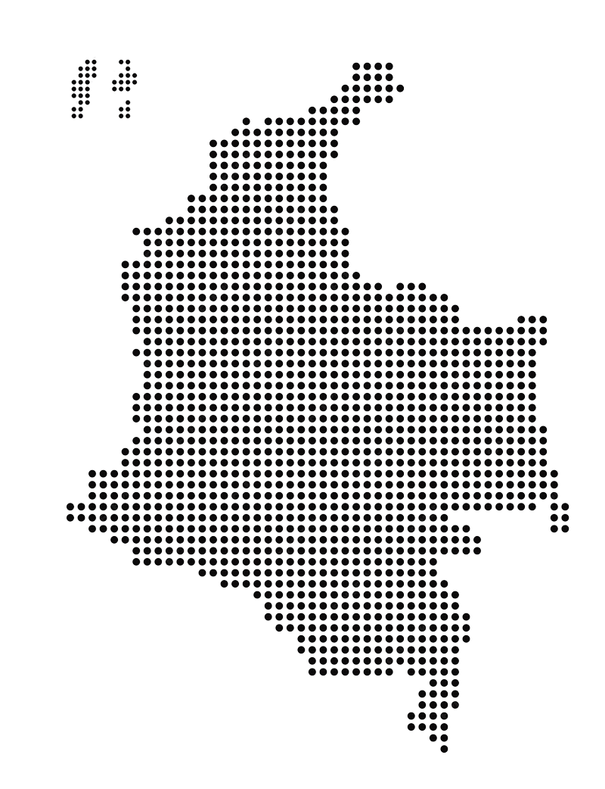
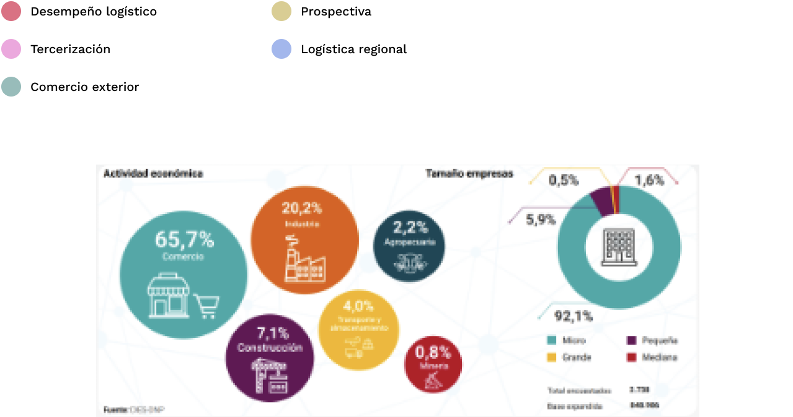
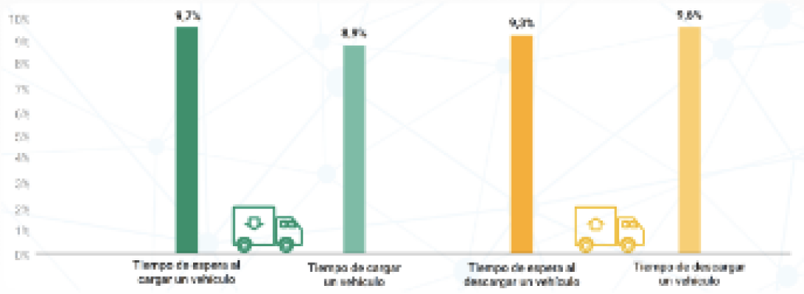

- Las 2.738 encuestas efectivas al expandirse representan 848.986 empresas del país.
- Se obtiene representatividad por estratos: actividad económica, región y tamaño de empresa.
Encuesta Nacional Logistica

La ENL es un instrumento de captura y generación de información a través del cual se mide el desempeño logístico del país, sirviendo como insumo para la toma de decisiones, tanto en política pública como del sector privado, enfocadas en mejorar la infraestructura y los servicios de transporte, almacenamiento, comercio exterior y demás operaciones del sector logístico.
Encuestas nacionales año 2018
Presentación ENL - 2018
Descargar informeLos indicadores de desempeño logístico muestran grandes diferencias entre los diferentes tamaños de empresas.
DISTRIBUCIÓN DE LA POBLACIÓN

COSTO LOGÍSTICO
El promedio del costo logístico de las empresas del país, como porcentaje de las ventas, se ubica en 13,5% representado principalmente por los costos de almacenamiento
TIEMPO CARGUE Y DESCARGUE
Menos del 10% de las empresas a nivel nacional miden los tiempos de operación y espera de cargue y descargue.
